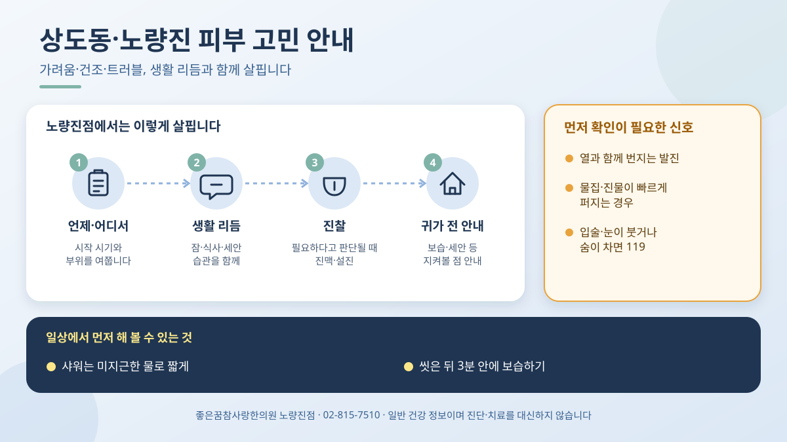
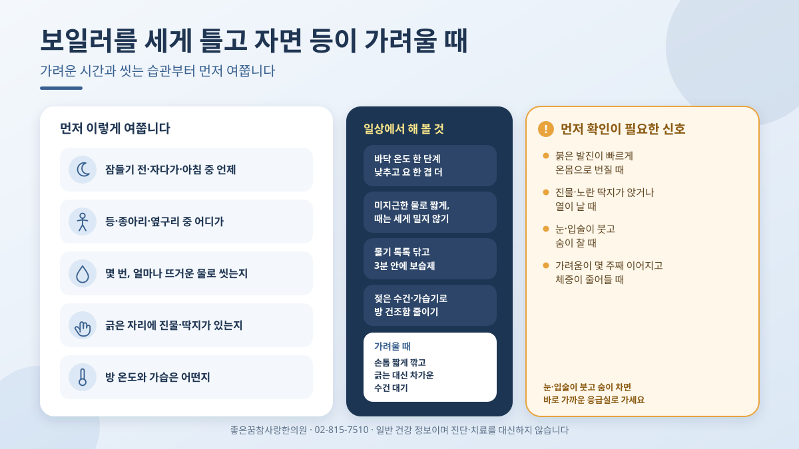
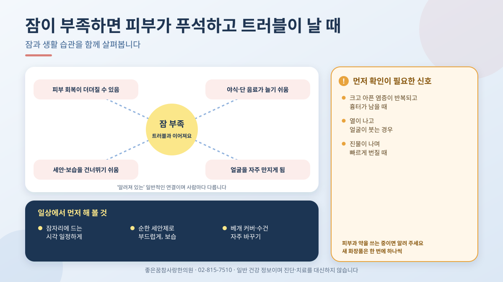
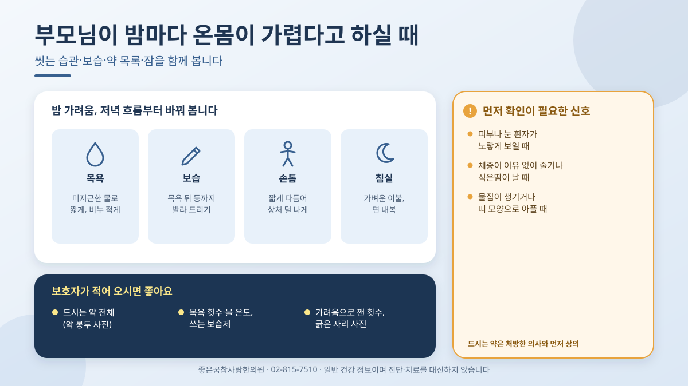
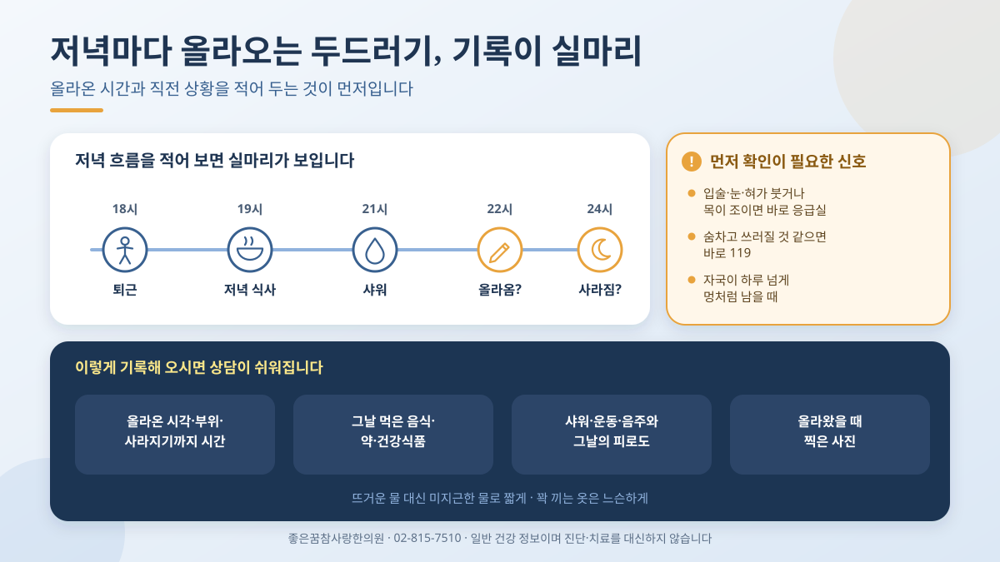
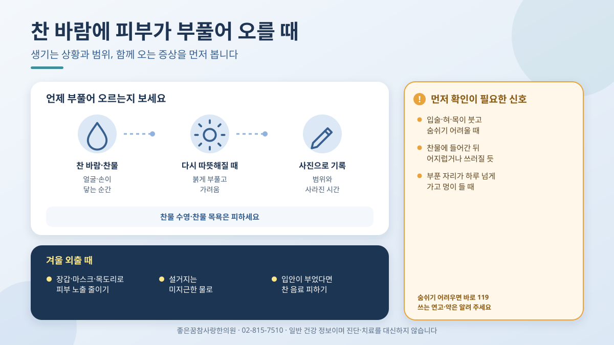
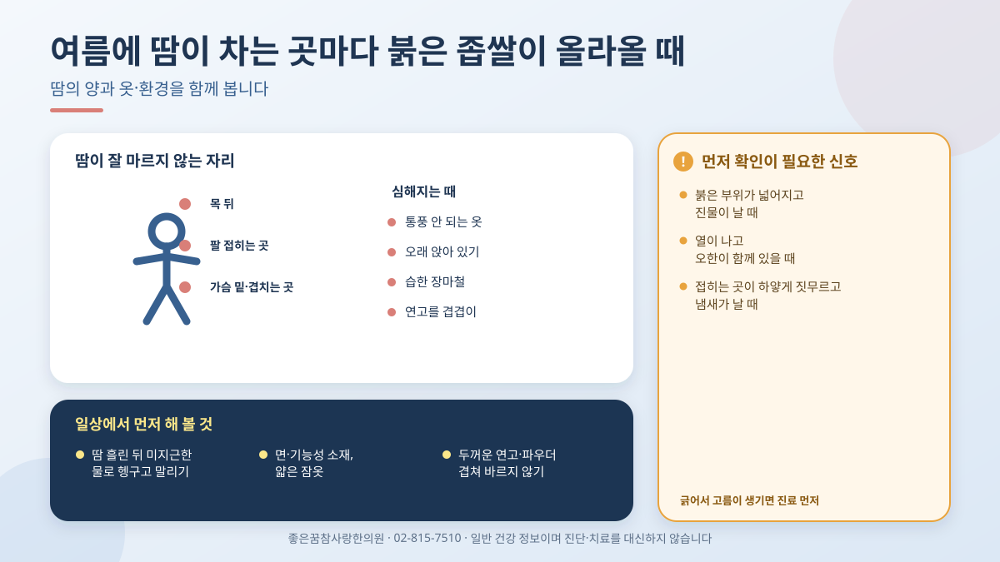
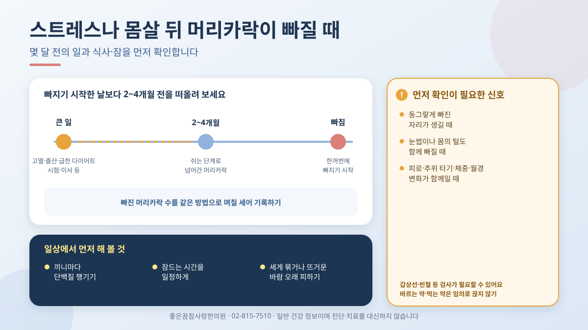

건조함과 가려움, 반복되는 두드러기, 손 습진, 턱 주변 트러블, 두피 각질처럼 피부의 불편은 계절, 씻는 습관, 잠과 스트레스에 따라 달라집니다. 좋은꿈참사랑한의원은 한방안·이비인후·피부과 진료과목에서 피부 상태와 함께 생활 리듬을 먼저 여쭙고, 피부과나 응급 진료가 먼저 필요한 신호는 따로 안내합니다.

피부, 쉬운 말로 하면
피부는 몸 바깥을 덮고 있지만 잠, 소화, 스트레스 같은 몸 안의 리듬과도 함께 움직입니다. 같은 가려움도 밤에 심한지, 씻은 뒤에 심한지, 계절마다 반복되는지에 따라 살필 점이 달라집니다.
자주 듣는 이야기
- 겨울이면 정강이가 하얗게 일어나고 밤에 가렵다
- 손을 자주 씻는 일을 해서 손이 갈라진다
- 저녁마다 두드러기가 올라왔다 가라앉는다
- 스트레스를 받으면 턱 주변에 트러블이 난다
- 두피에 각질이 생기고 가렵다
- 여름에 땀 차는 곳에 붉은 땀띠가 생긴다
- 스트레스를 겪은 뒤로 머리카락이 많이 빠진다
먼저 이렇게 여쭙니다
- 불편한 부위와 시작된 때, 심해지는 시간대
- 씻는 횟수와 물 온도, 쓰는 세정제와 보습제
- 잠, 소화, 최근 스트레스와 생활 변화
- 새로 먹기 시작한 약과 음식, 새로 쓴 화장품
- 피부과 진단과 바르는 약 사용 여부
일상에서 먼저 해 볼 수 있는 것
- 미지근한 물로 짧게 씻고, 씻은 뒤 바로 보습제 바르기
- 난방이 강한 실내는 습도를 적당히 유지하기
- 손을 씻은 뒤 물기를 꼼꼼히 닦고, 물일할 때는 고무장갑 안에 면장갑 끼기
- 긁지 않도록 손톱을 짧게 하고 잠자리 온도를 조금 낮추기
- 증상이 심한 날의 음식과 잠을 함께 적어 두기
한의원에서 함께 살필 수 있는 경우
피부과 진료를 받았지만 건조함과 가려움이 계절마다 반복되는 경우, 피부 불편과 함께 잠이나 소화, 스트레스가 흔들리는 경우에 생활 리듬을 함께 살핍니다.
진찰 후 필요하다고 판단될 때 침, 한약 상담 등을 상태에 맞게 이어서 씁니다. 피부과에서 처방한 약은 의사와 상의 없이 줄이거나 끊지 않습니다.
먼저 피부과·응급 진료가 필요한 신호
아래와 같은 경우는 피부과나 응급실 진료가 먼저입니다.
- 입술이나 눈이 붓고 숨쉬기 힘들 때(바로 응급실)
- 열이 나면서 온몸에 발진이 번질 때
- 붉게 부어오른 피부가 빠르게 번지고 뜨겁고 아플 때
- 띠 모양으로 물집이 잡히며 아플 때
- 점의 모양이나 색, 크기가 바뀔 때
- 진물이 나고 상처가 낫지 않을 때
보습, 생활에 맞추는 요령
보습제는 한 번에 많이 바르기보다 자주, 꾸준히 바르는 편이 생활에 맞추기 쉽습니다. 어떤 제품을 언제 발랐는지 적어 두면 진료실에서 함께 살피기 좋습니다.
- 씻은 뒤 물기가 살짝 남았을 때 바로 바르기
- 가려운 부위는 하루 두세 번 나누어 바르기
- 향이 강한 제품은 피하고 쓰던 제품 이름을 기록해 두기
- 옷은 부드러운 면 소재를 고르고 세제는 충분히 헹구기
좋은꿈참사랑한의원 진료는 이렇게 진행됩니다
상담에서 피부 상태와 생활을 함께 듣고, 필요하다고 판단될 때 진찰합니다. 증상이 심할 때와 가라앉았을 때의 사진을 찍어 오시면 상담에 참고합니다. 다시 오시면 지난번 이야기부터 이어서 여쭙습니다.
상도동·노량진에서
상도동과 노량진 일대에는 아파트와 원룸, 학원과 사무실이 모여 있어 겨울철 난방이 강한 실내에서 오래 지내는 분이 많습니다. 좋은꿈참사랑한의원은 상도역 3번 출구에서 약 200m 거리(서울 동작구 만양로2길 2 신성빌딩 3층·5층 (상도동))에 있고, 평일 오후 8시까지, 토·일·공휴일 오후 3시까지 진료합니다.
자주 묻는 질문
겨울마다 피부가 건조하고 가려운데 한의원에서 상담할 수 있나요?
네. 가려운 시간대, 씻는 습관, 보습 시기, 잠을 함께 여쭙습니다. 진물이 나거나 상처가 낫지 않으면 피부과 진료를 먼저 받으세요.
두드러기가 저녁마다 올라오는데 어떻게 하나요?
올라오는 시각과 먹은 음식, 약, 스트레스를 함께 살핍니다. 입술이 붓거나 숨이 차면 바로 응급실로 가세요.
피부과 연고를 쓰고 있어도 한의원 진료를 받을 수 있나요?
네. 쓰고 있는 약 이름과 바르는 방법을 알려 주세요. 피부과에서 처방한 약은 의사와 상의 없이 줄이거나 끊지 않습니다.
턱 주변 트러블이 스트레스 받을 때마다 생겨요.
트러블이 생기는 시기와 잠, 생리 주기, 식사를 함께 여쭙습니다. 고름이 크게 잡히거나 열이 나면 피부과 진료를 먼저 권합니다.
손을 많이 씻는 일을 해서 손이 갈라지면 어떻게 하나요?
씻는 횟수와 세정제, 장갑 사용을 함께 살피고 생활 속 관리 방법을 정리합니다. 갈라진 곳이 붓고 아프면 피부과 진료를 먼저 받으세요.
스트레스를 겪은 뒤로 머리카락이 많이 빠져요.
빠지기 시작한 때와 잠, 식사, 최근 체중 변화를 여쭙습니다. 동그랗게 빠진 자리가 생기면 피부과 확인을 먼저 권합니다.
어르신이 밤마다 가려워 잠을 못 주무세요.
피부 건조와 씻는 습관, 복용 중인 약, 잠을 함께 살핍니다. 복용 약 목록을 챙겨 오시면 상담에 참고합니다.
피부 사진을 찍어 가도 되나요?
네. 증상이 심할 때와 가라앉았을 때의 사진은 진료실에서 보이지 않는 변화를 이해하는 데 참고가 됩니다.
감수: 좋은꿈참사랑한의원 대표원장 이종호 · 마지막 확인 2026-11-26 · 일반적인 건강 정보이며 진단·치료를 대신하지 않습니다.
피부 글 모아 보기 (13편)

보일러를 세게 틀고 자면 등과 종아리가 가려운 것은 어떻게 살피나요?
따뜻한 바닥에서 오래 자면 피부의 물기가 빨리 날아가 등과 종아리가 가려워질 수 있어, 가려운 시간과 씻는 습관을 먼저 묻고 방 온도와 보습 순서부터 함께 조정합니다.
수정 2026-11-25

겨울 찬바람을 맞고 들어오면 볼이 빨갛게 달아오르고 따가울 때는 어떻게 살피나요?
찬바람과 따뜻한 실내를 오가면 볼이 빨갛게 달아오르고 따가워질 수 있어, 붉어지는 때와 세안·보습 습관, 쓰는 화장품을 먼저 묻고 바깥 활동 전후로 할 수 있는 관리를 함께 정리합니다.
수정 2026-11-24

잠이 부족하면 피부가 푸석하고 트러블이 나는 이유는 무엇인가요?
잠이 부족하면 피부 장벽 회복과 스트레스 반응에 영향을 주어 푸석함과 트러블이 늘 수 있는 것으로 알려져 있어 수면과 세안, 식사와 스트레스를 함께 점검하고 심한 염증과 흉터는 피부과 진료를 권합니다.
수정 2026-11-25

겨울이면 정강이가 하얗게 일어나고 밤에 가려울 때는 어떻게 살피나요?
겨울철 정강이 건조와 밤 가려움은 난방으로 건조해진 실내, 뜨거운 샤워, 늦은 보습과 관련 있는 경우가 많아 가려운 시간대와 씻는 습관, 잠의 질을 먼저 묻고 생활 습관을 함께 점검합니다.
수정 2026-11-25

두피에 비듬이 많고 가렵고 붉을 때는 어떻게 살피나요?
두피 비듬과 가려움, 붉은 기는 머리를 감고 말리는 습관, 잠과 스트레스, 기름진 두피 상태가 함께 작용하는 경우가 많아 생활 습관을 먼저 점검하고 상태를 함께 살핍니다.
수정 2026-11-24

부모님이 밤마다 온몸이 가렵다며 긁으실 때는 무엇을 먼저 살피나요?
나이가 들면 피부가 얇고 건조해져 밤 가려움이 잦아질 수 있어, 씻는 습관과 보습, 드시는 약, 잠의 질을 먼저 확인하고 다른 원인 확인이 필요한 신호도 함께 안내합니다.
수정 2026-11-25

가려움이 낮에 심한지 밤에 심한지는 왜 묻고, 어떻게 적어 두나요?
가려움이 심해지는 시간대는 땀, 옷, 실내 온도, 잠자리 환경과 이어진 경우가 많아, 시간과 그때의 상황을 함께 적어 오시면 생활에서 손볼 부분을 찾기 쉽습니다.
수정 2026-11-24

저녁만 되면 두드러기가 올라왔다 사라지기를 반복할 때는 어떻게 살피나요?
저녁이나 밤에 반복되는 두드러기는 음식, 피로, 체온 변화, 스트레스와 맞물리는 경우가 있어 올라온 시간과 직전 상황을 기록해 함께 살피며, 입술이 붓거나 숨이 차면 바로 응급실을 찾도록 안내합니다.
수정 2026-11-25

찬 바람을 쐬거나 찬물에 닿으면 피부가 부풀어 오를 때는 어떻게 살피나요?
찬 공기나 찬물에 닿은 자리가 부풀고 가려운 경우가 있어, 어떤 상황에서 얼마 뒤에 생기는지와 범위, 함께 오는 증상을 먼저 묻고 찬물 수영처럼 위험할 수 있는 상황을 함께 안내합니다.
수정 2026-11-24

여름에 땀이 차는 곳마다 붉은 좁쌀 같은 것이 올라올 때는 어떻게 살피나요?
여름철 목, 팔 접히는 곳, 허리처럼 땀이 차는 부위의 땀띠와 붉은 기는 땀이 머무는 시간과 옷, 실내 온도를 먼저 살피고 시원하고 마른 상태를 유지하는 방법을 함께 정리합니다.
수정 2026-11-24

손을 자주 씻는 일을 하는데 손가락 사이가 갈라지고 따가울 때는 어떻게 살피나요?
손을 자주 씻거나 물을 많이 만지는 일에서 생기는 손 습진은 물과 세제에 닿는 시간, 장갑 사용, 보습 습관을 먼저 묻고 일하면서도 줄일 수 있는 자극을 함께 찾습니다.
수정 2026-11-25

큰 스트레스나 몸살 뒤 몇 달 지나 머리카락이 한 움큼씩 빠질 때는 어떻게 살피나요?
큰 스트레스, 고열, 출산, 급한 다이어트 뒤 2~4개월쯤 지나 머리카락이 많이 빠지는 경우가 있어, 빠지기 시작한 시기와 그 전 몇 달의 일, 식사와 잠을 먼저 묻습니다.
수정 2026-11-24

어른이 되어서도 턱선에 뾰루지가 반복될 때는 무엇을 먼저 살피나요?
성인이 된 뒤 턱선과 입 주변에 반복되는 뾰루지는 잠 부족, 스트레스, 월경 주기, 식사, 손이나 마스크의 자극과 함께 나타나는 경우가 있어 생기는 시기와 생활 리듬을 먼저 묻습니다.
수정 2026-11-25